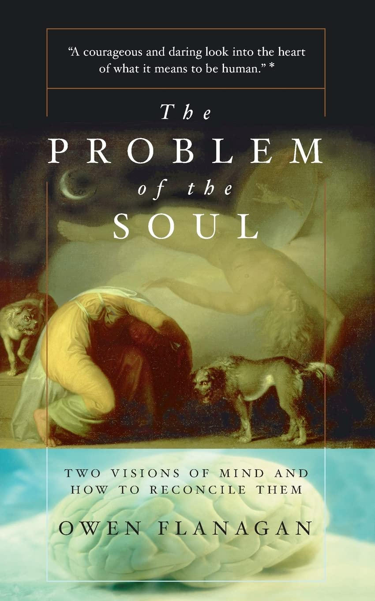
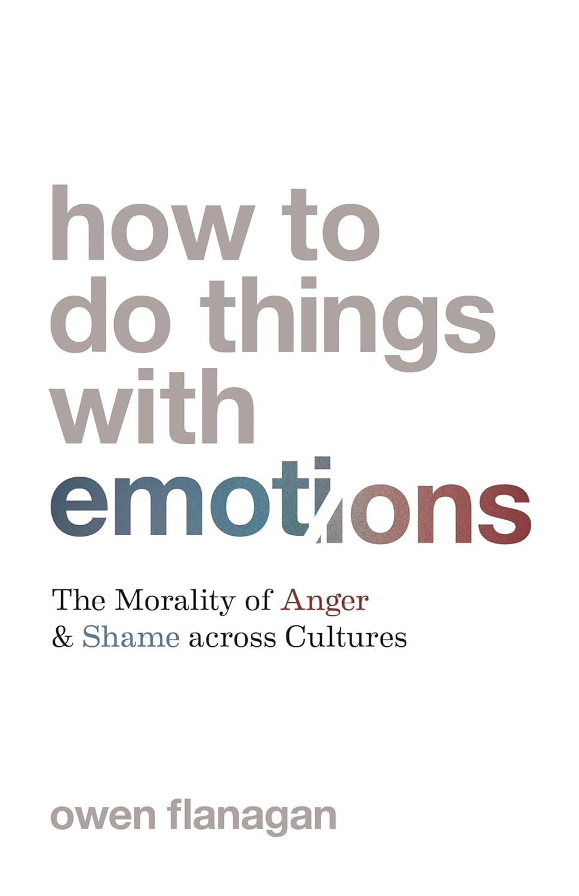
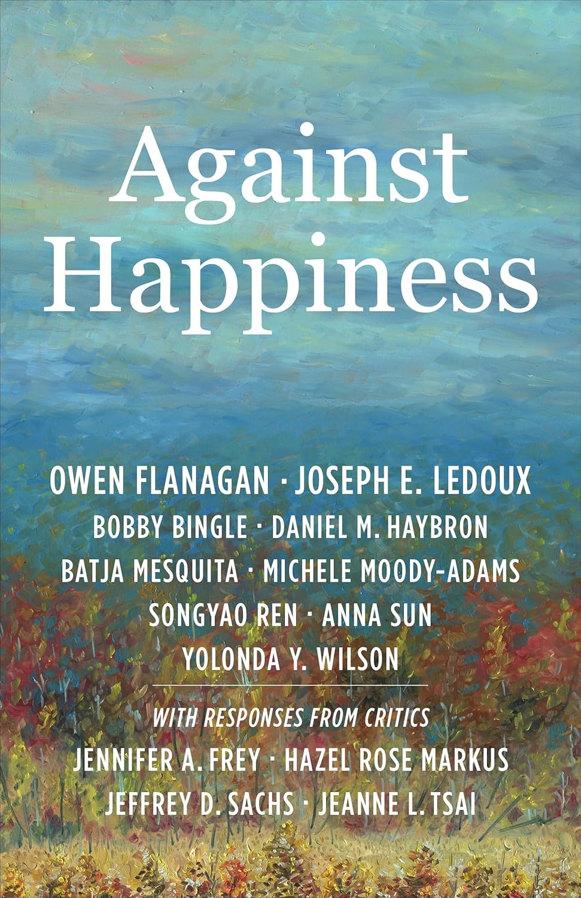

Welcome to My Book Store
 The Geography of Morals: Varieties of Moral Possibility
The Geography of Morals: Varieties of Moral Possibility The Bodhisattva's Brain: Buddhism Naturalized
The Bodhisattva's Brain: Buddhism Naturalized The Problem Of The Soul: Two Visions Of Mind And How To Reconcile Them
The Problem Of The Soul: Two Visions Of Mind And How To Reconcile Them How to Do Things with Emotions: The Morality of Anger and Shame across Cultures
How to Do Things with Emotions: The Morality of Anger and Shame across Cultures Against Happiness
Against Happiness The Science of the Mind
The Science of the Mind The Really Hard Problem: Meaning in a Material World
The Really Hard Problem: Meaning in a Material World Self Expressions: Mind, Morals, and the Meaning of Life
Self Expressions: Mind, Morals, and the Meaning of Life Dreaming Souls: Sleep, Dreams and the Evolution of the Conscious Mind
Dreaming Souls: Sleep, Dreams and the Evolution of the Conscious Mind Consciousness Reconsidered
Consciousness Reconsidered What Is It Like to Be an Addict?: Understanding Substance Abuse
What Is It Like to Be an Addict?: Understanding Substance Abuse The Geography of Morals: Varieties of Moral Possibility
The Geography of Morals: Varieties of Moral Possibility- The Bodhisattva's Brain: Buddhism Naturalized
- The Problem Of The Soul: Two Visions Of Mind And How To Reconcile Them
- How to Do Things with Emotions: The Morality of Anger and Shame across Cultures
- Against Happiness
 The Science of the Mind
The Science of the Mind The Really Hard Problem: Meaning in a Material World
The Really Hard Problem: Meaning in a Material World Self Expressions: Mind, Morals, and the Meaning of Life
Self Expressions: Mind, Morals, and the Meaning of Life Dreaming Souls: Sleep, Dreams and the Evolution of the Conscious Mind
Dreaming Souls: Sleep, Dreams and the Evolution of the Conscious Mind Consciousness Reconsidered
Consciousness Reconsidered What Is It Like to Be an Addict?: Understanding Substance Abuse
What Is It Like to Be an Addict?: Understanding Substance Abuse- Neuroexistentialism: Meaning, Morals, and Purpose in the Age of Neuroscience
- Varieties of Moral Personality: Ethics and Psychological Realism
- Naturalism, Human Flourishing, and Asian Philosophy: Owen Flanagan and Beyond
- The Moral Psychology of Anger
- The Oneness Hypothesis: Beyond the Boundary of Self
- The Natural Method: Essays on Mind, Ethics, and Self in Honor of Owen Flanagan
- Ethics in Action for Sustainable Development
- A Mirror Is for Reflection: Understanding Buddhist Ethics
- Naturalizing Epistemic Virtue